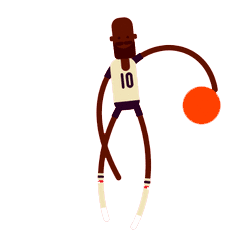

{{historyData.is_first_fans_usr}}
{{'learning_history_ask' | translate}}{{historyData.ls_question_num}}{{'learning_history_question_unit' | translate}}
{{'learning_history_reply' | translate}}{{historyData.ls_answer_num}}{{'learning_history_question_unit' | translate}}
{{historyData.is_first_helper_usr}}